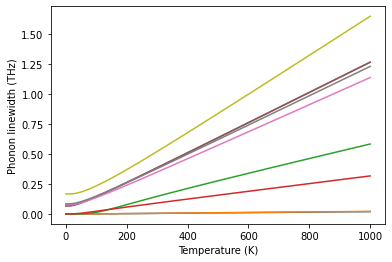
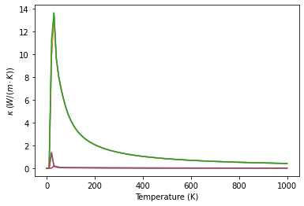

[2]:
%matplotlib inline
Phonon linewidth and thermal conductivity
With phonons and their interactions computed, we can use these coefficients to compute thermodynamic properties including phonon linewidth and thermal conductivity.
[3]:
import numpy as np
import matplotlib.pyplot as plt
from principia_materia import Fraction
from principia_materia.io_interface import parse_array
from principia_materia.io_interface.vasp import parse_poscar
from principia_materia.translation_group import get_structure, CrystalFTG
from principia_materia.phonon_id.fourier_interpolation import (
FourierInterpolation,
save_FourierInterpolation_to_hdf5,
get_FourierInterpolation_from_hdf5,
)
from principia_materia.phonon_id.conductivity import Conductivity
[4]:
pg = "Oh"
order = 2
supa = 3 * np.array([
[1, 0, 0],
[0, 1, 0],
[0, 0, 1],
])
temperature = np.linspace(0, 1000, 101)
[5]:
structure = get_structure(parse_poscar("tho2_linewidth/POSCAR"), stype=CrystalFTG)
structure.species_names = ["Th", "O"]
structure.orbitals = "p"
[6]:
cond = Conductivity(
structure=structure,
mesh=supa,
pg=pg,
)
cond.set_Phi("tho2_linewidth/order2/fi_mesh444.hdf5", order=2)
cond.set_Phi("tho2_linewidth/order3/fi_meshsBcc.hdf5", order=3)
[7]:
qpoint = np.array(parse_array("1/2 0 0", dtype=Fraction))
qpoint
[7]:
array([Fraction(1, 2), Fraction(0, 1), Fraction(0, 1)], dtype=object)
[8]:
gamma = cond.gamma_tetra_at_phonon(qpoint=qpoint, temperature=temperature, phonon_cutoff=1.0E-4)
[9]:
lines = plt.plot(temperature, gamma)
plt.xlabel("Temperature (K)")
plt.ylabel("Phonon linewidth (THz)")
plt.savefig("tho2_linewidth.pdf")

[10]:
conductivity = cond.thermal_conductivity_RTA(temperature=temperature, phonon_cutoff=1.0E-4)
iq = 0 q = [Fraction(0, 1) Fraction(0, 1) Fraction(0, 1)]
iq = 1 q = [Fraction(1, 3) Fraction(0, 1) Fraction(0, 1)]
iq = 2 q = [Fraction(2, 3) Fraction(0, 1) Fraction(0, 1)]
iq = 3 q = [Fraction(0, 1) Fraction(1, 3) Fraction(0, 1)]
iq = 4 q = [Fraction(1, 3) Fraction(1, 3) Fraction(0, 1)]
iq = 5 q = [Fraction(2, 3) Fraction(1, 3) Fraction(0, 1)]
iq = 6 q = [Fraction(0, 1) Fraction(2, 3) Fraction(0, 1)]
iq = 7 q = [Fraction(1, 3) Fraction(2, 3) Fraction(0, 1)]
iq = 8 q = [Fraction(2, 3) Fraction(2, 3) Fraction(0, 1)]
iq = 9 q = [Fraction(0, 1) Fraction(0, 1) Fraction(1, 3)]
iq = 10 q = [Fraction(1, 3) Fraction(0, 1) Fraction(1, 3)]
iq = 11 q = [Fraction(2, 3) Fraction(0, 1) Fraction(1, 3)]
iq = 12 q = [Fraction(0, 1) Fraction(1, 3) Fraction(1, 3)]
iq = 13 q = [Fraction(1, 3) Fraction(1, 3) Fraction(1, 3)]
iq = 14 q = [Fraction(2, 3) Fraction(1, 3) Fraction(1, 3)]
iq = 15 q = [Fraction(0, 1) Fraction(2, 3) Fraction(1, 3)]
iq = 16 q = [Fraction(1, 3) Fraction(2, 3) Fraction(1, 3)]
iq = 17 q = [Fraction(2, 3) Fraction(2, 3) Fraction(1, 3)]
iq = 18 q = [Fraction(0, 1) Fraction(0, 1) Fraction(2, 3)]
iq = 19 q = [Fraction(1, 3) Fraction(0, 1) Fraction(2, 3)]
iq = 20 q = [Fraction(2, 3) Fraction(0, 1) Fraction(2, 3)]
iq = 21 q = [Fraction(0, 1) Fraction(1, 3) Fraction(2, 3)]
iq = 22 q = [Fraction(1, 3) Fraction(1, 3) Fraction(2, 3)]
iq = 23 q = [Fraction(2, 3) Fraction(1, 3) Fraction(2, 3)]
iq = 24 q = [Fraction(0, 1) Fraction(2, 3) Fraction(2, 3)]
iq = 25 q = [Fraction(1, 3) Fraction(2, 3) Fraction(2, 3)]
iq = 26 q = [Fraction(2, 3) Fraction(2, 3) Fraction(2, 3)]
[11]:
x, y = np.array([(0, 0), (1, 1), (2, 2), (0, 1), (1, 2), (0, 2)]).T
[12]:
kappa = conductivity[:, x, y]
[22]:
lines = plt.plot(temperature, kappa)
plt.ylabel(r"$\kappa$ $(W/(m \cdot K))$")
plt.xlabel("Temperature (K)")
plt.savefig("tho2_conductivity.pdf")
